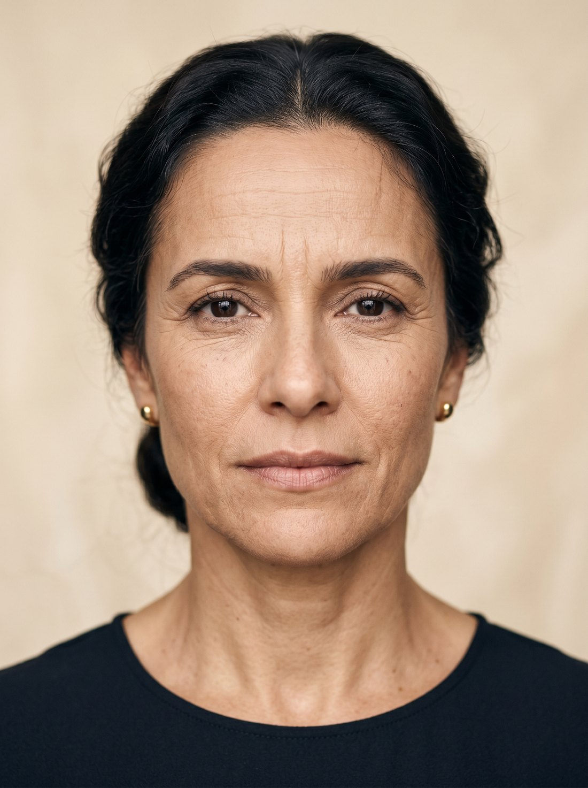

Simulador educativo
Passe o cursor pelo rosto — ele vira uma seringa. Clique nas regiões marcadas e observe as linhas de expressão se suavizarem, região por região.
Este é um simulador ilustrativo sobre uma modelo virtual criada por inteligência artificial. Ele demonstra como a toxina botulínica atua — não representa nem promete resultado individual, que varia caso a caso e depende de avaliação médica.

Modelo virtual · imagem gerada por IARegiões
E então?
Na consulta, um dos cirurgiões avalia suas linhas de expressão de verdade — e conversa com você sobre o que faz sentido.
Simulação ilustrativa com fins exclusivamente educativos, sobre imagem de modelo virtual gerada por IA. Não representa resultado de tratamento, que varia caso a caso e depende de avaliação médica individual. Todo procedimento possui indicações, contraindicações e riscos.